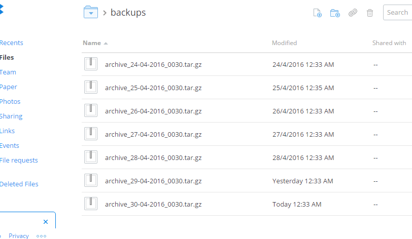

I've spent a little time and prepared a script which will;
- copy your emoncms feed data and obtain a dump of your emoncms MYSQL database
- create a datestamped tar.gz compressed archive of the data
- upload the archive to your Dropbox cloud account
- each time the script is run, it will delete both local and cloud archives which are older that 7 days (number of days can be changed in script)
I've now uploaded the script to Github if anyone would like to try it, and as always any feedback would be appreciated.
This script hasn't been tested on an emonpi!
DISK SPACE! You will need sufficient free disk space to use this script, as it will need at least the size of your total feed size free PLUS the space occupied by each archive. So for example;
Total feed size (calculated from your feeds page) is 50Mb, so you would need 50Mb free disk space plus 12.5Mb for each archive (each archive is about 25% the size of the feed data). If you are storing 7 days of archives, then you would need in total, 150Mb of writeable free disk space. As archives will be weeded after 7 days, no additional disk space will be needed thereafter.
Paul
Edit 15/4/2016 - Updated version now added to git - see below
Re: Emoncms 'cloud' backup to Dropbox - Updated 23/4
Hi Paul,
Tried your script. I have a file in my dropbox emoncms-2016-04-05_173205.tar.gz
The only thing that I can report is I had the following message presumably because I am not using emonhub:-
Setup completed!
emonhub: unrecognized service
emonhub: unrecognized service
tar: Removing leading `/' from member names
Regards,
Ian
Re: Emoncms 'cloud' backup to Dropbox - Updated 23/4
The reason why you are getting that error is because the script attempts to momentarily stop emonhub, to ensure that when the data directories are copied while they are not being updated by emonhub.
The first error is when it tries to stop it, and the second when it tries to start it again.
You could always comment out the references to emonhub, ie;
# sudo service emonhub stop
# sudo service emonhub start
I'm open to suggestions of how best to handle this, as data could also be written to the data folders via MQTT.
Also, I've found a typo in the script which prevented the weeding of old archives and have just updated it.
Probably the easiest way to update is just delete the dropbox-archive directory, and git clone it again, (add your emoncms password to dropbox_filemanager.sh again).
You won't have to authorize the script with Dropbox again, as the script has already saved the authorization in a hidden file, saved at /home/pi/.dropbox_uploader
I've also added an option (disabled by default) to backup node-red flows, credentials and configuration. To activate it, just select (Y)es in the configuration section of dropbox_filemanager.sh
Paul
Edit 15/4/2016 - now fixed
Re: Emoncms 'cloud' backup to Dropbox - Updated 23/4
Hi Paul
As I am not using emonhub do I need a way of stopping data being posted during the backup run or is it not likely to be an issue.
Regards
Ian
Re: Emoncms 'cloud' backup to Dropbox - Updated 23/4
Hi Ian
You may have seen my other recent post regarding this issue, and to try and overcome the possibility of a corrupted archive, I've found a solution, which doesn't involve stopping services, yet will secure a snapshot of the emoncms data.
I'm going to rewrite the script in php (if I can!), but it may take a week or so to complete.
Paul
Re: Emoncms 'cloud' backup to Dropbox - Updated 23/4
I'm open to suggestions of how best to handle this, as data could also be written to the data folders via MQTT.
Hi Paul,
Here's some info about a method to determine, via a bash script, whether or not a process is running.
Perhaps the logic flow can be of some help if/when you rewrite the script.
Re: Emoncms 'cloud' backup to Dropbox - Updated 23/4
Thanks Bill, I've now found a way to get the feeds data without stopping any of the services, which seems the safest and most resilient option.
I'll update this thread when I've updated the github repo.
Re: Emoncms 'cloud' backup to Dropbox - Updated 23/4
Sounds good! Looking forward to seeing what you've come up with.
Re: Emoncms 'cloud' backup to Dropbox - Updated 23/4
I've just updated git with a new version, which should deal with the issue described by Ian.
The main changes are;
I've been testing the new version for over 3 days now, running the script every 30 minutes via node-red, so have created almost 150 archives, which were automatically weeded after 12 hours. All of the archives were checked for consistency of file size, and have used 5 archives chosen at random to perform full backups onto a 2nd pi, all of which were successful for both emoncms & node-red. Just remember to check the file ownership when using the backups, ie $chown -R pi:pi .node-red (same for emoncms data directories).
Each backup comprised of 29 emoncms feeds, MYSQL dump and the essential node-red files, and was just over 60Mb in size, but was compressed before uploading to just 13Mb.
To update from the previous version, delete the original installation directory, and git clone the latest version as per the readme. (you won't have to re-authorize your dropbox API).
Paul
Re: Emoncms 'cloud' backup to Dropbox - Updated 23/4
Hi,
Thank you for sharing your code, though I am having issues with backing up. At the end of the script, i get the following:
Dumping MYSQL data
Backing up node-red data
An error has occurred, details:tar-based phar "/home/pi/dropbox-archive/backups/archive.tar" cannot be created, contents of file "phpfina/44.dat" could not be written Checking for expired archives...
Uploading new archive to Dropbox, this may take a while...
find: `*.gz': No such file or directory
I presume there is a permissions issue?
Kind Regards,
Dave
Re: Emoncms 'cloud' backup to Dropbox - Updated 23/4
I presume there is a permissions issue?
Doubtful as the script will be running as Root. Can you check how much free space you have left on your pi pls;
Also, from your feeds page, can you tell me what is reported when you 'Refresh Feed Size'.
Paul
Re: Emoncms 'cloud' backup to Dropbox - Updated 23/4
Hi Paul,
the output is:
Kind Regards,
Dave
Re: Emoncms 'cloud' backup to Dropbox - Updated 23/4
Hi Dave
As I said in my first post,it hasn't been tested on an emonpi (as I don't have one).
Presumably, you've installed the script in your writeable /home/pi/data directory which shows that you have 119Mb free.
I don't know how large your feed data is (check by running 'Refresh Feed Size' from your feeds page), but the script will need at least that amount of free space to create the archive PLUS enough space to store the archives locally (which compressed are about a quarter of the size of the feed data each).
So if your feed data size is 100Mb, you would need approx 125Mb free to create the first archive, and an additional 25Mb for each archive.
If you were keeping 7 days worth of archives, then you would need 300Mb of free space. After 7 days, the older archives are weeded, so won't increase further thereafter.
Does this appear to be the issue? If so, it's a shame that you've 1.4G unused in your root partition.
It will probably be a good idea for me to add something in my first post to check for free space before installing...
Paul
Re: Emoncms 'cloud' backup to Dropbox - Updated 23/4
Dropbox changed it's API format 2 days which caused the script to fail.
I've now updated the script in Github, and it's back working!
Paul
Re: Emoncms 'cloud' backup to Dropbox - Updated 23/4
Still working well! 7 days worth of emoncms & nodered archives safely stored in Dropbox. Archives older than 7 days are automatically weeded.
